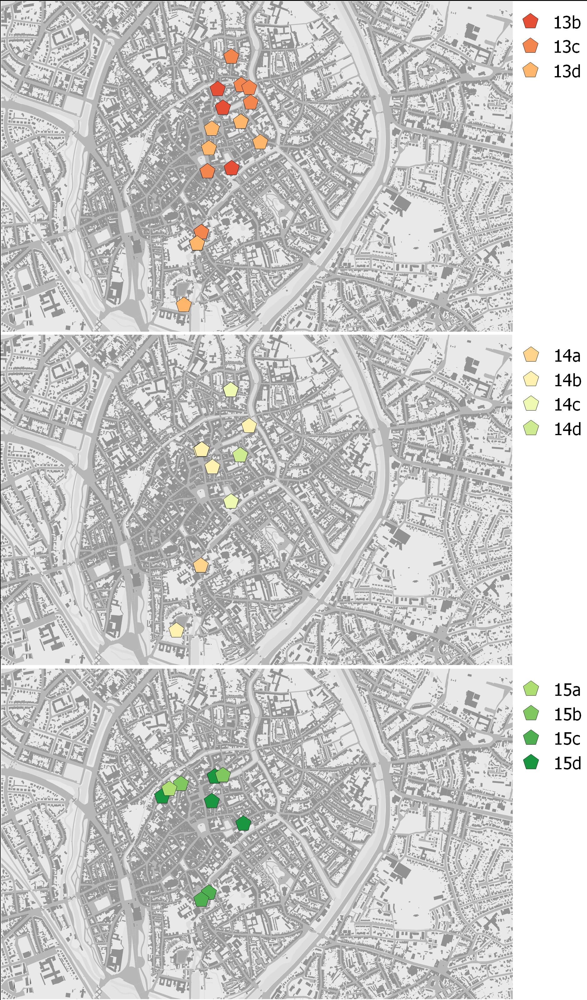
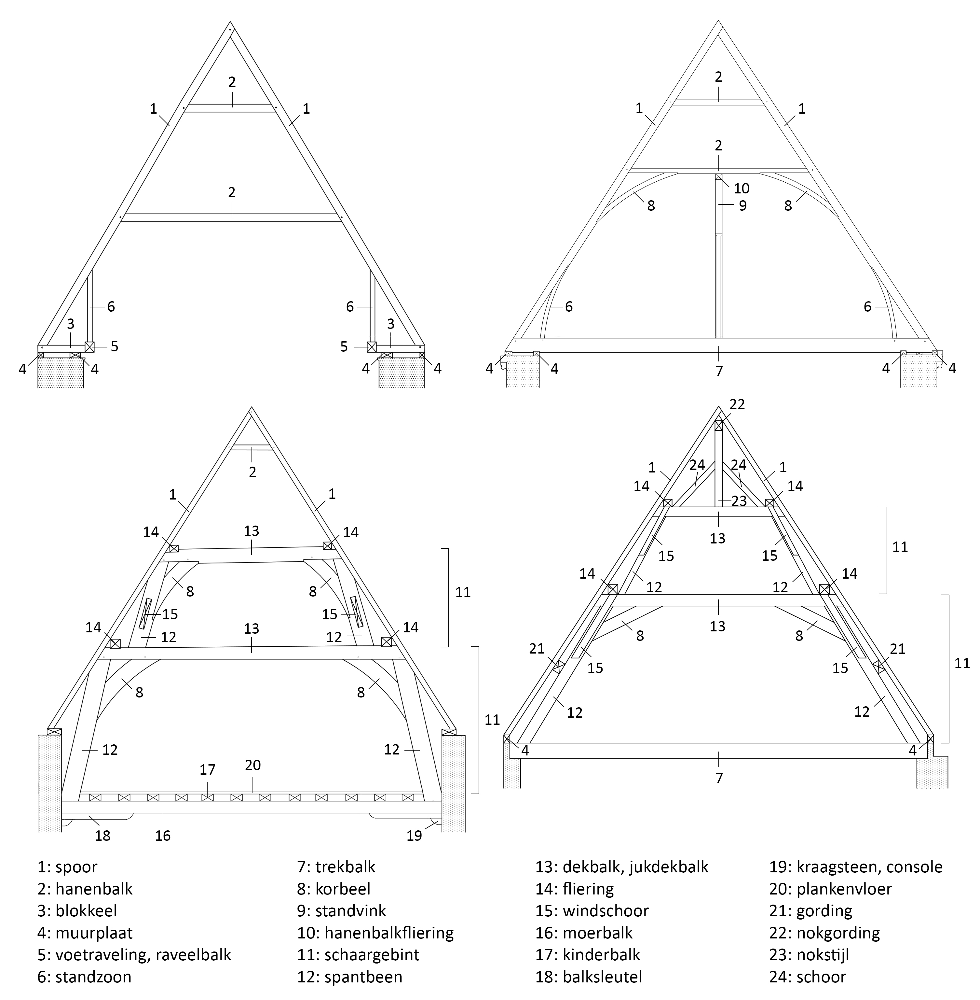

3 Typologie en chronologie
De dragende houtbouw van een zadeldak, kortweg de kap of dakkap, bestaat uit een opeenvolging van gespannen. Het gespan is een driehoekige constructie die de vorm en de helling van het zadeldak bepaalt. De basis van het driehoekige gespan wordt gevormd door de trekbalk, een balk die ligt op de muren en de breedte van het gebouw overspant. De twee hellende zijden van het gespan worden gevormd door sporen of kepers. Sporen lopen van de voet van de kap tot in de nok. Ze kunnen bestaan uit één enkele balk of zijn samengesteld uit meerdere stukken. Kepers daarentegen zijn balken van beperkte lengte. Ze staan opgesteld in elkaars verlengde, volgens de helling van de kap, maar worden onderbroken door langsverbindingen. Gordingenkappen bestaan vaak uit kepers, die als afzonderlijke balken tussen de gordingen zijn aangebracht.
De gespannen rusten doorgaans op de muurplaat, een balk die overlangs op de muur ligt. Meestal zijn er twee balken bovenop een muur; men spreekt dan van een dubbele muurplaat. Vaak staan de gespannen niet direct op de muurplaat maar rusten ze nog op een balkje dat dwars op de muurplaat ligt, het blokkeel. Als extra steunen kunnen tussen de blokkelen en de sporen verticaal gerichte standzonen zijn opgesteld.
Behalve door de nokverbinding kunnen sporen of kepers worden bijeen gehouden door horizontaal gerichte hanenbalken. Als centrale steun voor de nok kunnen in een kap ook middenstijlen, de zogenaamde makelaars, ingebracht zijn. Makelaars strekken zich uit van de trekbalk onderaan tot de nok bovenaan. Ze kunnen echter ook voorkomen in verkorte vorm, waarbij ze aanzetten op een hanenbalk.

Op basis van de schikking en de aan-of afwezigheid van bepaalde onderdelen, het ontwerp dus van een dakkap, kunnen we een indeling maken volgens verschillende types.
Het meest eenvoudige en oudste type dakkap is de sporenkap zonder langsverbinding (Fr.: charpente à chevrons formant fermes; Eng.: common rafter roof). Dit zijn kappen zonder horizontale versteviging tussen de gespannen. Elk gespan staat dus op zichzelf, als in een rij dominostenen. Soms zijn de sporenparen van de gespannen onderaan verbonden met een trekbalk. Daarnaast kunnen ter hoogte van de voet van de kap raveelbalken zijn aangebracht. Men spreekt in dat geval ook van een voetraveling of voetraveelbalken. De voetraveling loopt over de ganse lengte van de dakkap. Zij kan in verschillende onderdelen zijn aangebracht tussen de trekbalken of is op de trekbalken gelegd. De voetraveling kan hierbij ook een dragende functie vervullen, als steun van de standzonen onder de sporen. In Brugge werden sporenkappen zonder langsverbindingen gedurende gans de 13de eeuw opgetrokken. Men vindt ze nog tot in de eerste helft van de 14de eeuw, zoals in het huis Ten Zwaerdekine (Spiegelrei 18, zie 6.2.1.8), wat wijst op de lange levensduur van dit type kap. In kerkelijke architectuur bleven ze zelfs nog langer in gebruik, zoals blijkt uit de laat 15de-eeuwse kappen van de zijbeuken van de Sint-Jakobskerk.
Vanaf de 13de eeuw worden sporenkappen verstevigd met langsverbindingen (Fr.: contreventement; Eng.: longitudinal bracing). De meest eenvoudige oplossing is een versteviging met windlatten, schuin oplopende planken die meerdere sporen overspannen. Ze kunnen opgenageld zijn of in de sporen ingelaten en dienen om de overhelling van de sporenparen tegen te gaan. Flieringen zijn horizontaal geplaatste balken die de sporen over de ganse lengte van de dakkap ondersteunen en bevinden zich steeds op zekere hoogte in de dakkap. Een kap kan per wand één of meerdere flieringen bevatten. Om de flieringen te dragen zijn schaargebinten toegevoegd. Dit zijn arcadeachtige constructies, bestaande uit twee schuin gerichte spantbenen, soms met een gekromde vorm (kromstijlen), en een horizontale dekbalk waarop de flieringen liggen. Tegen de gevels worden flieringen soms gedragen door gebinten met rechtop staande stijlen; men spreekt dan van stijl-gebinten. De kap van de centrale ziekenzaal van het Sint-Janshospitaal, opgericht in 1226-1241d, is de oudst bewaarde sporenkap met flieringen op schaargebinten in de Lage Landen (zie 8.2.1). Kappen met flieringen op schaargebinten kenden zeker tot in de 17de eeuw een grote populariteit, in Brugge en bij uitbreiding de Nederlanden.
Een verwante vorm van langsverbinding is de hanenbalkfliering. Zoals de naam aangeeft, gaat het om een fliering die centraal onder de onderste hanenbalken loopt. Hanenbalkflieringen worden meestal ondersteund door standvinken die zijn opgesteld op de trekbalken van de dakkap. De kap van de zuidelijke ziekenzaal van het Sint-Janshospitaal is hierop een zeldzame, mogelijk zelfs unieke uitzondering: hier is de hanenbalkfliering opgehangen aan de onderkant van de onderste hanenbalken (zie 7.1.1).
In meerdere Brugse kappen werd vastgesteld dat de schaargebinten en de flieringen latere toevoegingen zijn in oudere kappen die initieel als sporenkap waren opgericht. Dit is bijvoorbeeld het geval in de kap van het huis Spinolarei 16 (zie 6.1.1). Dit valt soms af te leiden uit de aanwezigheid van uitsparingen of niet langer functionele houtverbindingen op de sporen (Fig. 3.3, bovenaan), een gevolg van de (gedeeltelijke) verwijdering van de onderste hanenbalken of korbelen om zo ruimte vrij te maken voor de nieuwe schaargebinten. Dat het dikwijls geen overbodige luxe en zelfs noodzakelijk was om langsverbindingen – in de vorm van flieringen rustend op schaargebinten – toe te voegen in een sporenkap is ook vandaag nog te zien in meerdere kappen: de overhelling van sporenparen wijst immers op het verzakken van een kap onder invloed van winddruk (Fig. 3.3, onderaan).
In het midden van de 13de eeuw verschijnen in de Nederlanden de eerste kappen met houten tongewelven. De houten tonnen, die halfrond of spits kunnen zijn, worden gevormd door de gezamenlijke kromming van gebogen standzonen en korbelen. De tonnen zijn niet altijd betimmerd met een beplanking maar kunnen ook open zijn, met een vrij zicht in de bovenliggende kapconstructie. Het broederklooster van het Sint-Janshospitaal bezit de oudst gedateerde sporenkap met houten ton in Brugge (zie 6.3.1). De in 1238-1258d gedateerde kap was van bij aanvang zonder beplanking op de ton.

Gordingen (Fr.: pannes; Eng.: (side) purlins) zijn een verzamelnaam voor langsverbindingen op verschillende plaatsen in een dakkap. De nokgording is een overlangse balk in de nok van een kap. Zij is meestal gesteund door geschoorde standvinken die op de hanenbalken staan. Er zijn twee types nokgordingen. In het eerste type loopt de nokgording onder de nokverbinding van de sporen of de kepers, die dus zelf de nok van de kap vormen. In het andere type zijn de sporen tegen de nokgording aangezet. De nok wordt hier gevormd door de gezamenlijke verbinding van de nokgording en de sporen of kepers. Het is nog onduidelijk wanneer precies de nokgording haar intrede deed, maar zeker vanaf de 16de eeuw is zij een gebruikelijk onderdeel van dakconstructies.
Gordingen kunnen ook, zoals de flieringen waarmee ze vaak worden verward, zijn aangebracht langs de wanden van een kap. Het onderscheid tussen flieringen en gordingen betreft de plaatsing: flieringen liggen vlak, gordingen liggen gekanteld, evenwijdig met de dakhelling. Het eerste type gording is een ononderbroken steun van de sporen of kepers over de ganse lengte van de kap. Deze gordingen worden geschraagd door schaargebinten, maar door hun gekantelde positie zijn ze schuin ingelaten in de dekbalken van de schaargebinten - in tegenstelling tot flieringen, die vlak op de dekbalken liggen. Het andere type is de gording die bestaat uit afzonderlijke balken tussen, bijvoorbeeld, de stijlen van de schaargebinten. Tussen de gordingen zijn de kepers als korte, afzonderlijke balken aangebracht. Gordingen van dit type bevinden zich in de kap van het stadhuis van Damme (1464-1467), één van de oudste voorbeelden van een kap met gordingen in de streek van Brugge (zie 11.1.1). De doorbraak van kappen met gordingen op schaargebinten, ten koste van kappen met flieringen, lijkt zich te situeren in de 18de eeuw. De chronologie van gordingenkappen blijft dus nog zeer ruim, zowel in Brugge als daarbuiten.